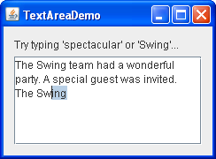

Lección: Usando Componentes Swing
Sección: Cómo Usar Varios Componentes
Cómo Usar Áreas de Texto
La clase
JTextArea
suministra un componente que visualiza múltiples líneas de texto y opcionalmente permite al usuario editar el
texto. Si necesita obtener sólo una línea de entrada del usuario, debería usar un
campo de texto. Si quier que el área de texto visualice su texto usando fuentes
múltiples u otros estilos, debería suar un panel editor o panel de texto. Si el
texto visualizado tiene una longitud limitada y no es nunca editado por el usuario, use una
etiqueta.
Muchos de los ejemplos del Tutorial son áreas de texto no editables que muestran la salida del programa. Aquí
tiene una imagen de un ejemplo llamado TextDemo que le habilita a que teclee texto usando un
campo de texto (en la parte superior) y entonces añadir el texto tecleado en un área de texto (debajo).

Pulse el botón Lanzar para ejecutar TextDemo usando Java™ Web Start ( descargue KDJ 7 o posterior). Alternativamente, para compilar u ejecutar el ejemplo usted mismo, consulte el índice de ejemplo.

Puede encontrar el código entero de este programa en
TextDemo.java. El siguiente código crea e inicializar el área de
texto:
textArea = new JTextArea(5, 20);
JScrollPane scrollPane = new JScrollPane(textArea);
textArea.setEditable(false);
Los dos argumentos al constructor de JTextArea son sugerencias del número de filas y columnas,
respectivamente, que el área de texto debería visualizar. El panel de desplazamiento que contiene el área de
texto presta atención a esta sugerencias cuando determina lo grande que el panel de desplazamiento debería ser.
Sin la creación del panel de desplazamiento, el área de texto no se desplazaría automáticamente. El constructor
de JScrollPane mostrado en el fragmento precedente configura el área de texto para que se vea en un
panel de desplazamiento, y especifica que las barras de desplazamiento del panel de desplazamiento deben ser
visibles cuando sean necesarias. Vea Cómo Usar Los Paneles de Desplazamiento si
quiere más información.
Las áreas de texto son editables por defecto. El código setEditable(false) hace que el área de
texto sea no editable. Es aún seleccionable y el usuario puede copiar datos de ella, pero el usuario no puede
cambiar los contenidos del área de texto directamente.
El código siguiente añade texto a el área de texto. Note que el sistema de texto usa el carácter "\n"
internamente para representar las nuevas líneas; para más detalles, vea la documentación de la IPA para
DefaultEditorKit.
private final static String newline = "\n";
...
textArea.append(text + newline);
A menos que el usuario haya movido el cursor (punto de inserción) pulsando o arrastrando en el área de texto,
el área de texto automáticamente se desplaza de forma que el texto añadido sea visible. Puede forzar a que el
área de texto se desplace hacia la parte inferior moviendo el cursor al final del área de texto después de
llamar a append:
textArea.setCaretPosition(textArea.getDocument().getLength());
Personalizar Áreas de Texto
Puede personalizar los áreas de texto de varias formas. Por ejemplo, aunque un área de texto dada puede
visualizar texto con una sola fuente y color, puede establecer qué fuente y color usa. Esta opción de
personalización puede ser realizada en cualquier componente. Puede también determinar cómo el área de texto
recorta las líneas y el número de caracteres por tabulación. Finalmente, puede usar los métodos que la clase
JTextArea hereda de la clase JTextComponent para establecer propiedades tales como el
cursor, soporte para el arrastre, o selección del color.
El código siguiente tomado de
TextSamplerDemo.java demuestra la inicialización de un área de texto
editable. El área de texto usa la fuente de cursiva especificada, y ajusta las líneas entre palabras.
JTextArea textArea = new JTextArea(
"Esto es un JTextArea editable. " +
"Un área de texto es un componente de texto \"plano\" , " +
"lo que significa que aunque puede mostrar texto " +
"en cualquier fuente, todo el texto está en la misma fuente."
);
textArea.setFont(new Font("Serif", Font.ITALIC, 16));
textArea.setLineWrap(true);
textArea.setWrapStyleWord(true);
Por defecto, un área de texto no ajusta las lineas que son demasiado largas para el área de visualización. En
vez de eso, usa una línea para todo el texto entre los caracteres de nueva línea y ─ si el área
de texto está dentro de un panel de desplazamiento ─ se permite
desplazarse horizontalmente. Este ejemplo activa el ajuste de línea con una llamada al método
setLineWrap para indicar que el área de texto deberá ajustar las líneas entre los límites de las
palabras en lugar de entre los límites de los caracteres.
Para proporcionar capacidad de desplazamiento, el ejemplo coloca el área de texto en un panel de desplazamiento.
JScrollPane areaScrollPane = new JScrollPane(textArea);
areaScrollPane.setVerticalScrollBarPolicy(
JScrollPane.VERTICAL_SCROLLBAR_ALWAYS);
areaScrollPane.setPreferredSize(new Dimension(250, 250));
Es posible que haya notado que el constructor de JTextArea usado en este ejemplo no especifica el
número de filas o columnas. En vez de eso, el código limita el tamaño del área de texto configurando el tamaño
preferido del panel de desplazamiento.
Otro Ejemplo: TextAreaDemo
El ejemplo TextAreaDemo presenta un área de texto editable con una característica especial
─ una función de completado de palabras. A media que el usuario teclea palabras, el programa
propone sugerencias para completar la palabra siempre que el vocabulario del programa contenga una palabra que
comience con lo que se ha escrito. Aquí tiene una imagen de la aplicación TextAreaDemo.

Pulse el botón Lanzar para ejecutar TextAreaDemo usando Java™ Web Start ( descargue KDJ 7 o posterior). Alternativamente, para compilar y ejecutar el ejemplo usted mismo, consulte el índice de ejemplos.
Puede encontrar el código entero de este programa en
TextAreaDemo.java.
Este ejemplo proporciona una capacidad de desplazamiento para el área de texto con la política por defecto de de la barra de desplazamiento. Por defecto, la barra de desplazamiento vertical sólo aparce cuando el área de visualización se llena completamente con texto y no hay sitio para añadir nuevas palabras. Puede establecer un panel de desplazamiento de este tipo con el código siguiente:
textArea.setWrapStyleWord(true);
jScrollPane1 = new JScrollPane(textArea);
Como se mención arriba, el área de texto es editable. Puede jugar con el área de texto tecleando y pegando texto, o borrando algunas partes del texto o el contenido entero. También intente utilizar combinaciones de teclas estándar para editar texto dentro del área de texto.
Ahora explore como la función de completado de palabras es implementada. Teclee una palabra como "Swing" o "special". Tan pronto como ha tecleado "sw" el programa muestra una posible finalización "ing" resaltada en azul claro. Presione Intro para aceptar la finalización o continúe tecleando.
El siguiente código añade un oyente de documento al documento del área de texto:
textArea.getDocument().addDocumentListener(this);
Cuando empezó a teclar una palabra, el método insertUpdate comprueba si el vocabulario del
programa contiene el prefijo tecleado. Una vez que una finalización para el prefijo se encuentra, una llamada
al método invokeLater envía una tarea para cambiar el documento más tarde. Es importante recordar
que no puede modificar el documento desde dentro de la notificación de evento del documento, de otra forma
obtendrá una excepción. Examine el código siguiente abajo.
String prefix = content.substring(w + 1).toLowerCase();
int n = Collections.binarySearch(words, prefix);
if (n < 0 && -n <= words.size()) {
String match = words.get(-n - 1);
if (match.startsWith(prefix)) {
// Se encuentra una finalización
String completion = match.substring(pos - w);
// No podemos modificar Document desde dentro de la notificación,
// así que enviamos una tarea que hace el cambio más tarde
SwingUtilities.invokeLater(
new CompletionTask(completion, pos + 1));
}
} else {
// No se encuentra nada
mode = Mode.INSERT;
}
El código mostrado en negrita ilustra cómo se crea la selección. El curso es establecido primerno al fina de la
palabra completa, después se mueve de vuelta a la posición después del último carácter tecleado. El método
moveCaretPosition no sólo mueve el cursor a una nueva posicón sino que también selecciona el texto
entre las dos posiciones. La tarea de finalización es implementada con el siguiente código:
private class CompletionTask implements Runnable {
String completion;
int position;
CompletionTask(String completion, int position) {
this.completion = completion;
this.position = position;
}
public void run() {
textArea.insert(completion, position);
textArea.setCaretPosition(position + completion.length());
textArea.moveCaretPosition(position);
mode = Mode.COMPLETION;
}
}
La IPA del Área de Texto
Las siguientes tablas enumeran los constructores y métodos comúnmente utilizados de JTextArea.
Otros métodos que probablemente llame se definen en JTextComponent, y están listados en
La IPA del Componente de Texto.
Podría también invocar métodos en un área de texto que son heredados de sus otros ascendentes, tales como
setPreferredSize, setForeground, setBackground, setFont,
etcétera. Vea La Clase JComponent para tablas de métodos heredados de uso común.
La IPA para usar área de textos incluye las siguientes categorías :
| Método o Constructor | Propósito |
|---|---|
|
JTextArea()
JTextArea(String) JTextArea(String, int, int) JTextArea(int, int) |
Crea un área de texto. Cuando está presente, el argumento String contiene el texto
inicial. Los argumentos int especifican el ancho deseado en columnas y la altura en filas,
respectivamente.
|
|
void setText(String)
String getText() (definidos en JTextComponent)
|
Establece u obtiene el texto mostrado por el área de texto. |
| Método | Propósito |
|---|---|
|
void setEditable(boolean)
boolean isEditable() (definido en JTextComponent)
|
Establece o indica si el usuario puede editar el texto en el área de texto. |
|
void setColumns(int);
int getColumns() |
Establece u obtiene el número de columnas visualizadas por el área de texto. Esto es solo una pista para calcular el ancho preferido del área. |
|
void setRows(int);
int getRows() |
Establece u obtiene el número de filas visualizadas por el área de texto. Esto es solo una pista para calcular la altura preferida del área. |
| int setTabSize(int) | Establece el número de caracteres a los que equivale una tabulación. |
| int setLineWrap(boolean) | Establece si las líneas son ajustadas si son demasiado largas para caber dentro del ancho asignado. Por defecto esta propiedad es falsa y las líneas no son ajustadas. |
| int setWrapStyleWord(boolean) | Establece si las líneas pueden ser ajustadas en el espacio en blanco (límites entre palabras) o en cualquier carácter. Por defecto esta propiedad es falsa, y las líneas pueden ser ajustadas (si el ajuste de líneas está activado) en cualquier carácter. |
| Método | Propósito |
|---|---|
|
void selectAll()
(definido en JTextComponent)
|
Selecciona todos los caracteres en el área de texto. |
| void append(String) | Agrega el texto especificado al final del área de texto. |
| void insert(String, int) | Inserta el texto especificado en la posición especificada. |
| void replaceRange(String, int, int) | Reemplaza el texto entre las posiciones indicadas con la cadena especificada. |
|
int getLineCount()
int getLineOfOffset(int) int getLineStartOffset(int) int getLineEndOffset(int) |
Utilidades para encontrar un número de línea o la posición del principio o final de la línea especificada. |
Ejemplos que Usan Áreas de Texto
Esta tabla lista los ejemplos que usan área de textos y señala dónde se describen esos ejemplos.
| Ejemplo | Dónde Se Describe | Notas |
|---|---|---|
| TextDemo | Esta sección | Una aplicación que añade el texto introducido-por-el-usuario en un área de texto. |
| TextAreaDemo | Esta sección | Una aplicación que tiene un área de texto con una función de finalización de palabras. |
| TextSamplerDemo | Usando Componentes de Texto | Utiliza los componentes de texto de Swing. |
| HtmlDemo | Cómo Usar HTML en Componentes Swing | Un área de texto que habilita al usuario a teclear código HTML que es mostrado en una etiqueta. |
| BasicDnD | Introducción al Arrastrar y Soltar (Dnd) | Demuestra la función incorporada de arrastrar y soltar de varios componentes Swing, incluido el área de textos. |
| FocusConceptsDemo | Cómo Usar el Subsistema de Foco | Demuestra como el foco funciona usando unos pocos componentes que incluyen un área de texto. |